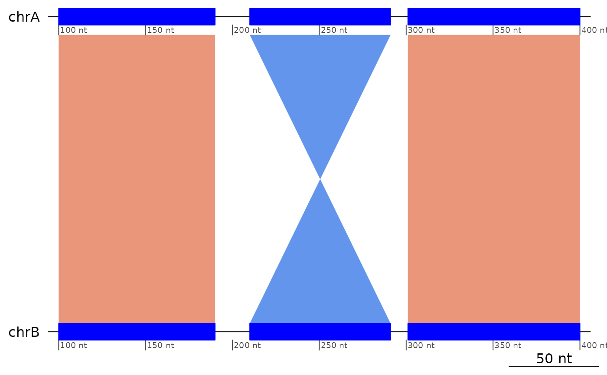

Flag ranges that start a triplet that would be colinear if the central pair were aligned to the opposite strand.
Arguments
- gb
A
GBreaks()object.- tol
Tolerance window for the distance between two ranges.
Details
Here is a trivial example of an inversion.
┌──────────────┬──────────────┬──────────────┐
│ chrA:101-200 │ chrA:201-300 │ chrA:301-400 │ (Target genome)
└──────────────┴──────────────┴──────────────┘
+ - + (Alignment direction)
┌──────────────┬──────────────┬──────────────┐
│ chrB:101-200 │ chrB:201-300 │ chrB:301-400 │ (Query genome)
└──────────────┴──────────────┴──────────────┘See also
Other Flagging functions:
flagAll(),
flagColinearAlignments(),
flagDoubleInversions(),
flagLongShort(),
flagPairs(),
flagTranslocations()
Other Inversion functions:
filterInversions(),
flagDoubleInversions(),
flagPairs(),
leftInversionGaps(),
showInversions()
Other Structural variants:
StructuralVariants,
flagDoubleInversions(),
flagPairs(),
flagTranslocations(),
plotApairOfChrs()
Examples
flagInversions(exampleInversion)
#> GBreaks object with 3 ranges and 2 metadata columns:
#> seqnames ranges strand | query inv
#> <Rle> <IRanges> <Rle> | <GRanges> <Rle>
#> [1] chrA 100-190 + | chrB:100-190 TRUE
#> [2] chrA 210-291 - | chrB:210-291 FALSE
#> [3] chrA 301-400 + | chrB:301-400 FALSE
#> -------
#> seqinfo: 1 sequence from an unspecified genome
flagInversions(exampleInversion, tol = 19)
#> GBreaks object with 3 ranges and 2 metadata columns:
#> seqnames ranges strand | query inv
#> <Rle> <IRanges> <Rle> | <GRanges> <Rle>
#> [1] chrA 100-190 + | chrB:100-190 FALSE
#> [2] chrA 210-291 - | chrB:210-291 FALSE
#> [3] chrA 301-400 + | chrB:301-400 FALSE
#> -------
#> seqinfo: 1 sequence from an unspecified genome
plotApairOfChrs(exampleInversion)

flagInversions(exampleInversion |> reverse() |> sort(ignore.strand = TRUE))
#> GBreaks object with 3 ranges and 2 metadata columns:
#> seqnames ranges strand | query inv
#> <Rle> <IRanges> <Rle> | <GRanges> <Rle>
#> [1] chrA 101-200 - | chrB:301-400 TRUE
#> [2] chrA 210-291 + | chrB:210-291 FALSE
#> [3] chrA 311-401 - | chrB:100-190 FALSE
#> -------
#> seqinfo: 1 sequence from an unspecified genome
plotApairOfChrs(exampleInversion |> reverse())